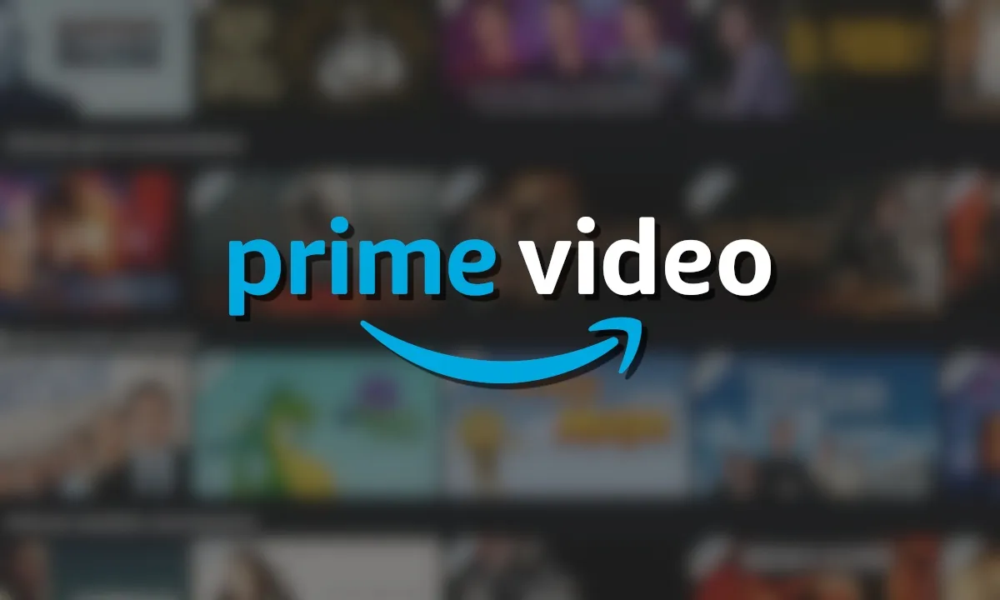
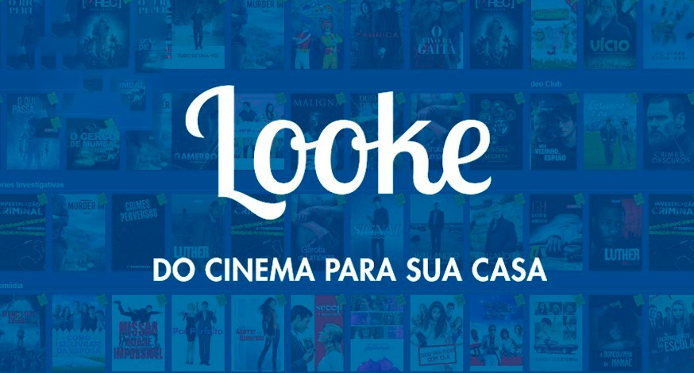

Conheça o streaming da Netflix!
Conheça o streaming da Amazon

Conheça o streaming da Disney
Conheça o streaming da Looke
Esquenta Guara Friday
Em novembro acontece o nosso Esquenta Guara Friday apenas no Guararapes Online

Os Tamanhos dos Banners de Anúncios: Tudo o Que Você Precisa Saber Sobre os Anúncios do Google, Facebook, Instagram
Neste artigo, você vai aprender tudo o que precisa saber sobre banners publicitários, como eles funcionam, tamanhos comuns de banners e, o mais importante, quais anúncios têm o melhor desempenho.
YouTube Shorts lança campanha com foco em fãs de futebol
Com o objetivo de se aproximar do seu público Geração Z e dando continuidade à sua parceria com o Paulistão, o YouTube Shorts acaba de lançar sua nova campanha de marketing no Shorts em parceria com grandes criadores da marca e que são fãs de futebol.
Facebook e o Instagram terão um canal de denúncias de notícias falsas nas redes sociais
Pela primeira vez, o Facebook e o Instagram terão um canal de denúncias dedicado ao Tribunal Superior Eleitoral (TSE) para combater a disseminação de notícias falsas nas redes sociais. Cada notificação recebida será analisada pela Meta, proprietária dos aplicativos. Se o conteúdo reportado violar as políticas das plataformas, será removido imediatamente.
Tik Tok: app que virou febre no Brasil diverte maranhenses durante quarentena
Nascido na China, o Tik Tok está transformando o ecossistema de mídia durante a quarentena, ocasionada pela Covid-19, doença causada por vírus de origem chinesa. Em São Luís, Greycy de Menezes Pontes, Fernanda Souza e Isabelle Azevedo se aproveitam de mais tempo livre, em suas respectivas casas, para fazerem da plataforma o mote do entretenimento fácil. Elas ofertam vídeos engraçados, entre 15 a 60 segundos, com truques divertidos de edição.